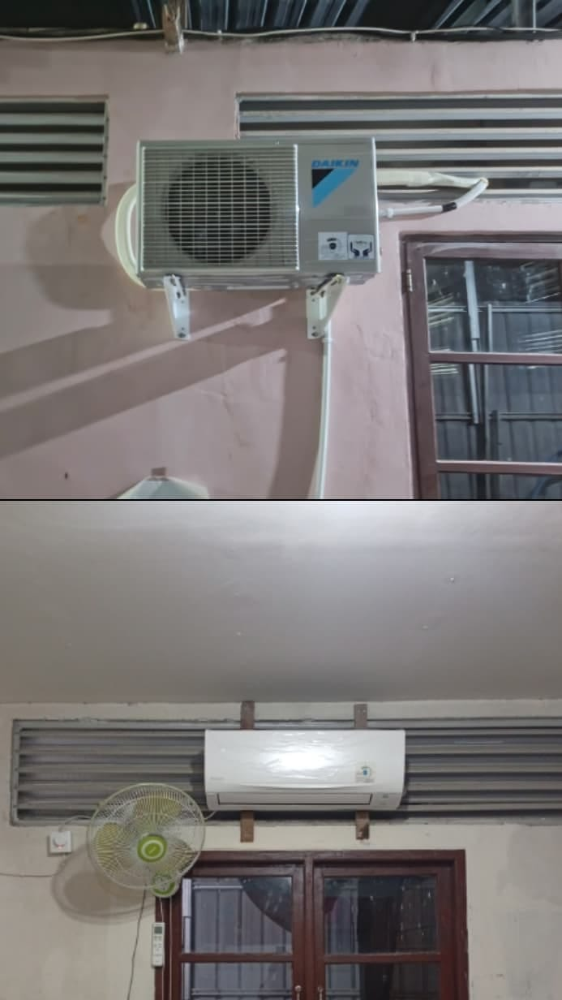

Bersama mendukung kenyamanan kegiatan belajar mengajar santri putri Rumah Tahfizhul Qur'an Al Imam Adz Dzahabiy.
Alhamdulillah, total dana ta'awun yang telah terkumpul sebesar Rp28.179.000.
Dari jumlah tersebut, sebesar Rp24.955.860 telah direalisasikan untuk pengadaan 6 unit AC, sehingga tersisa dana ta'awun sebesar Rp3.223.140.
وَتَعَاوَنُوا۟ عَلَى ٱلْبِرِّ وَٱلتَّقْوَىٰ ۖ وَلَا تَعَاوَنُوا۟ عَلَى ٱلْإِثْمِ وَٱلْعُدْوَٰنِ ۚ
“Dan tolong-menolonglah kalian dalam kebaikan dan ketakwaan, dan jangan tolong-menolong dalam dosa dan permusuhan.”
QS. Al-Ma'idah: 2Ruang kelas santri putri merupakan ruangan yang serba tertutup, dengan dinding berlapis dan plafon yang relatif rendah. Kipas angin di dalam kelas pun ternyata masih belum mampu mengatasi kondisi panas yang ada. Kondisi ini membuat sirkulasi udara di dalam ruangan kurang optimal. Ditambah dengan jumlah santri yang belajar dalam satu ruangan, ruangan menjadi lebih mudah terasa panas dan pengap, terutama saat kegiatan belajar berlangsung.
Pengadaan AC diharapkan dapat membantu menciptakan kondisi ruangan yang lebih sejuk dan nyaman, sehingga para santri dapat mengikuti kegiatan belajar dengan lebih baik. Oleh karena itu, Yayasan Al Muntaqo membuka program ta'awun atau penggalangan dana untuk pengadaan AC.
Semoga Allah ﷻ membalas setiap bentuk partisipasi dengan pahala yang berlipat ganda dan menjadikannya sebagai pemberat timbangan kebaikan di akhirat kelak.
Jazakumullahu khairan katsiran.
